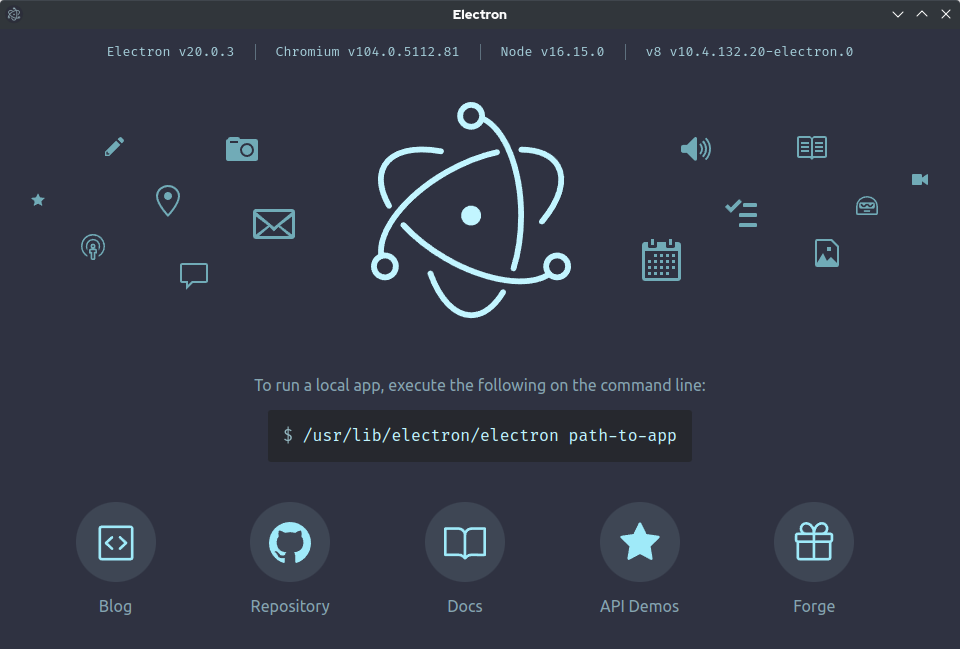

Kelly Cheng
Computer Science Student | Penetration Testing & AI Security Enthusiast
I focus on building and analyzing secure systems through hands-on cybersecurity labs and applied development work. My experience includes Linux systems administration, Nginx server hardening, and network traffic analysis, where I go beyond implementation to understand and document the underlying why behind each decision.
I'm currently focused on learning how to analyze packet captures and firewall configurations to identify vulnerabilities. My workflow combines structured problem-solving with modern development practices, using tools like VS Code alongside AI-assisted workflows (Claude and GitHub Copilot) to streamline development while maintaining strict manual review for security, accuracy, and code integrity.
Latest Documentation
Complete writeup documenting the LLM05 vulnerability, trigger keyword discovery, payload development, and successful session cookie exfiltration via stored XSS on EPOCH-1 MedBay.
Latest Blog Post
Four rooms, five AI attack categories, one week of prep and four days of competition. Top 10% globally, Top 5% in the US — my first week on TryHackMe and my first CTF ever.
Cybersecurity Lab Highlights

CS Project Highlights
